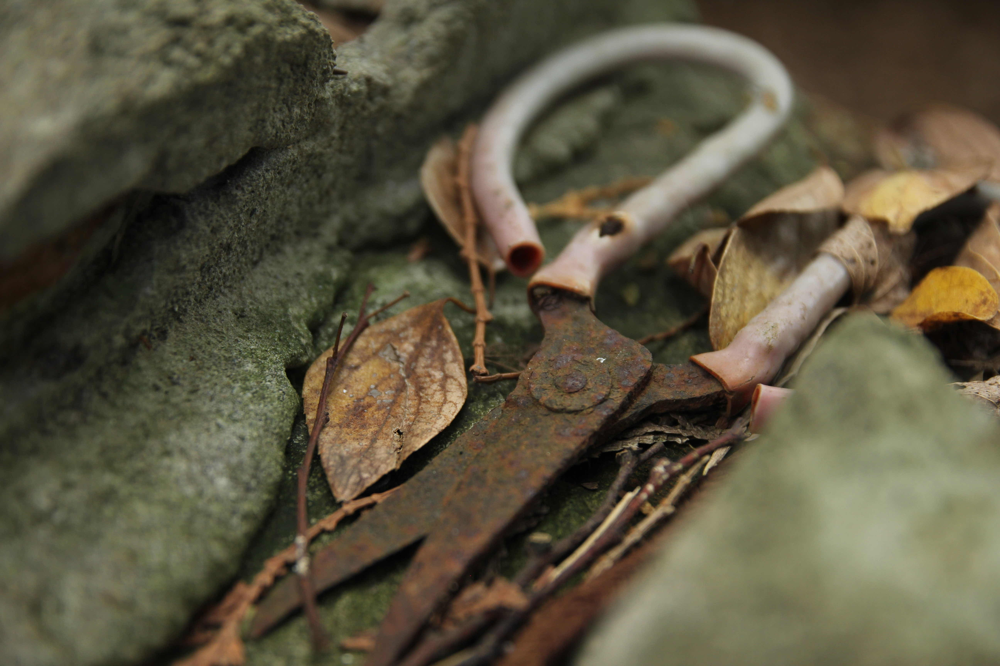
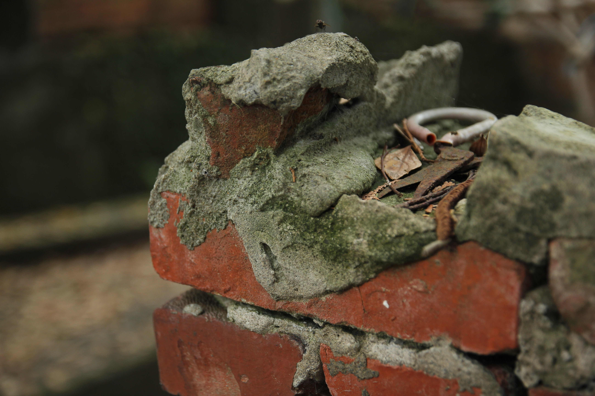
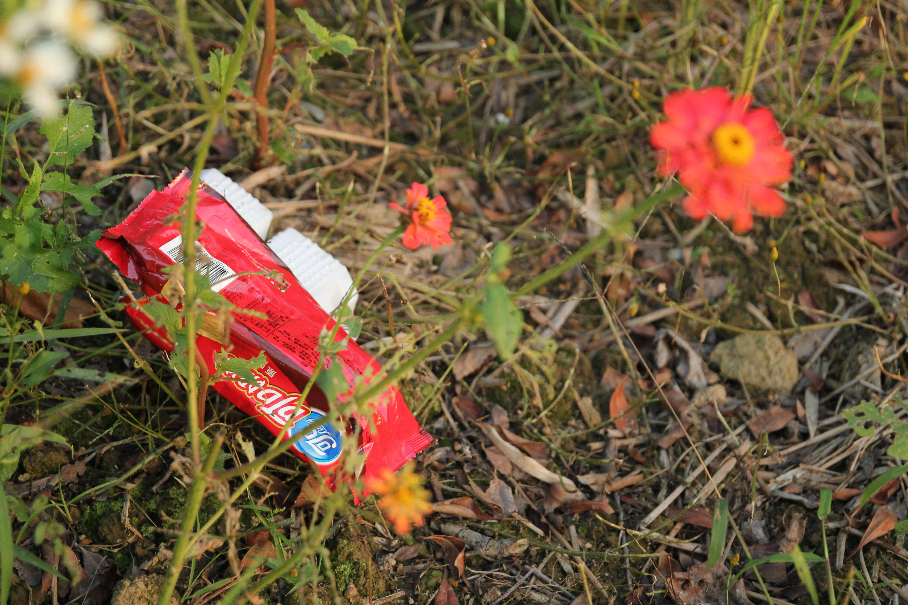
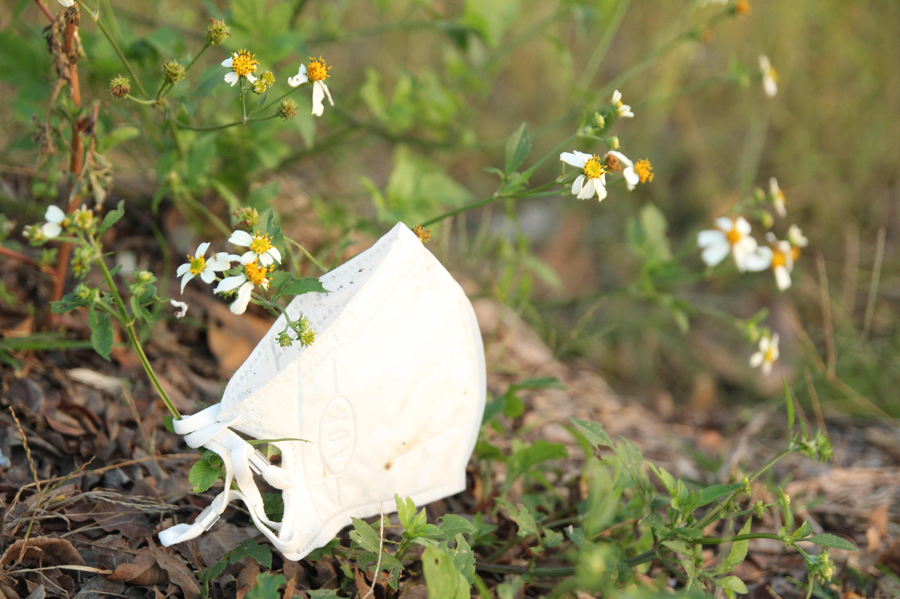
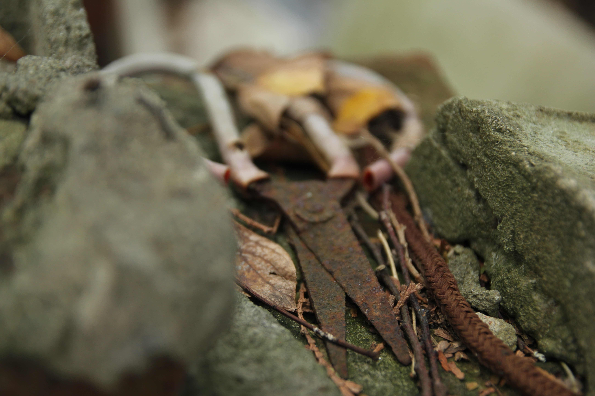
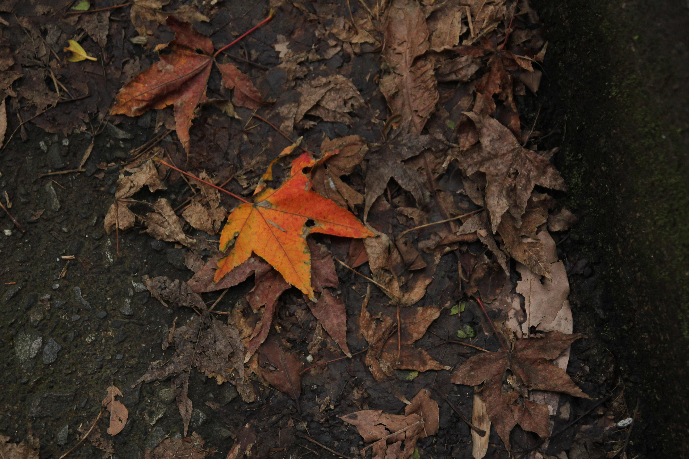

被留下的痕跡
以日常環境中被忽略的物件為觀察對象，透過影像記錄殘留、時間與場域之間的關係。

Info
Type｜Photography Series
Category｜Observation / Still Image
Year｜2026
Format｜Digital Photography
Concept
本系列以日常環境中被忽略的物件為觀察對象， 透過鏡頭記錄其殘留狀態與時間痕跡。
這些物件在原本功能消失後，仍持續存在於空間中， 形成一種介於存在與消失之間的狀態。 作品嘗試透過構圖、光影與距離感，重新觀看這些被留下的痕跡。
Series





